Intro/Assumptions
Purpose
This document is intended for anyone that is starting to play Switch Axe F, or already plays it and seeks more information on matchups/builds. This document has SAF specific information and sets for every part of progression from your first moments in G rank and getting your first Switch Axe all the way up to slaying Zeniths and even Musous.
We try our best to source every bit of information in this guide, alongside images that we used. If you feel like something has been misrepresented or not sourced correctly, please dm one of us.
Introduction
The Switch Axe Frontier or SAF (in the rest of the document referred to as Swaxe) is a parry heavy weapon. This weapon has multiple valid playstyles, a fairly low skill floor but also one of the higher skill ceilings as far as Frontier weapons go. It relies heavily on both its ability to block but also its fade slash, which is an offensive move that gives you invincibility frames (i-frames) and generally allows for a very aggressive playstyle.
Assumptions
- You are playing on the "Rain" server
- You are following the Leap's Rain Frontier Guide
- You are already in G Rank
- You know about Mertna's which has information on skills and sigils
- You are using Ferias to find information about items if needed
Glossary / Common Terms
- Baru = Zenith Baruragaru Swaxe, the best Zenith Power Phial Swaxe
- BC = Bounty Coins, a currency used on the "Rain" server
- CS = Combat Supremacy Skill
- CS+SW = Combat Supremacy+Starving Wolf
- Evo = Evolution Weapon, the strongest weapons in the game
- Fran = Supreme Axe Fransisca, the Net Cafe Swaxe
- Gasu = Zenith Gasurabasura Swaxe, the earliest available Zenith Poison Swax
- RDP = Road Points, currency earned from the Hunting Road gamemode
- Shiri = Shiriagari, a skill that grants a stacking raw buff over time
- SSU = Skill Slots Up a commonly slotted Z skill
- SW = Starving Wolf+2 Skill
- Swaxe = Switch Axe Frontier/SAF/SA/etc
- Tech = Weapon Tech/Edge Marshal
- NP = Net Cafe Points, currency earned by staying logged into the same land
- Skill combinations will be referred to with a + (e.g. Stylish+Up is the combination, Stylish Up is only the individual Z Skill)
Style/Controls/Swaxe Specifics
Extreme Style is a combo of Heaven/Storm and is strictly better than the other options for every situation. SephVII has a great video tutorial covering the basic controls of the weapon.
Lightsword Main Damage Combo
Overhead/Downslash (Primary atk button Y/Triangle) → Fade Slash (Both atk buttons and either backwards or sideways movement Y/Triangle + B/Circle + Left/Right/Back left stick) → Forward Slash (Primary atk button Y/Triangle + Forward left stick) → Repeat
Fit parries in as needed and fade slash after for maximum dps. Remember you can use standing slashes after a successful parry (primary atk button Y/Triangle) and charged slashes after a fade slash (Hold primary atk button Y/Triangle, hold left stick forward for a faster version that moves you forward) to delay your attacks or for extra range.
Phial Types
- Element: 1.3x Ele Boost, good for specific matchups
- Power: 1.1x Raw Boost, good for general use
- Status: 1.3x Status Boost, situationally useful
- Stun: Adds KO buildup to attacks that spend phials, mainly for road
Sigils
Sigils can only be placed on your weapon and take up decoration slots. Swaxe benefits a lot from sigils compared to some other weapons and the ones you use will largely depend on your phial type and the situation.
Short form for Attack will be Atk as well as Ele for Element (for sigils only).
Most important Sigils
- SAF Up Atk Atk: Standard sigil on every non-ele phial switch axe
- Atk Atk Atk: Standard sigil on every non-ele phial switch axe
- SAF Up Ele Ele: Use with Element Phials
- Ele Ele Ele: Use with Element Phials
- SAF Up (SAF) Guard Atk/Ele: Increases the angle at which you can parry and heals for 15HP on every successful block, very comfy for a lot of matchups
- SAF Up (SAF) Stun. B Atk: Used for road, improves discharge stun values
- Stun Value Atk Atk: Used with KO phials on Road, improves all KO values
- Wait Time Duration Atk/Ele: Perfect sigils of this kind are better than their all Attack/Element counterparts, getting them is the hard part.
What Swaxe do I make?
Here will be presented a visual guide for which Swaxes to make at which point in the game.
G Rank Swaxes
G Rank only has a few Swaxes worth making.
GR1+ (Steel Crushing Axe)
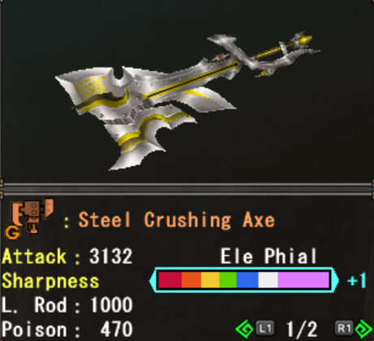 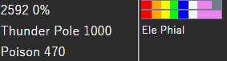The earliest you unlock the Swaxe will be once you enter G-rank. So once you've got that done you should go into making the Orb Swaxe by completing the "Anti-Kushala Daora Weaponry" quest in the "Gear Acquisition" section at the G rank quest counter. 10 orbs are required for the swaxe.
GR1+ (B.Zero Dragon Axe)


You can make this Swaxe as soon as you enter G rank by spending NP to buy all the parts. Either get to GR150 and grind Elze for this Swaxe or you can use a mixture of GCP/RDP/NP to buy all the parts. This Swaxe is generally the last G Swaxe you will make before you start using zenith weapons.
(Optional) Diva Weapons (Torag - Canso/Serisui - Canso)
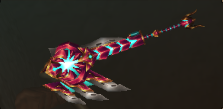
Diva weapons are the strongest G rank weapons but they require a lot of grinding. You will be able to equip Zenith gear before you fully upgrade one. They are mentioned here because they are generally best in slot for bounties that restrict you to only G gear. The red one (pictured) is usually better but if you prefer the blue or like having lots of options feel free to get both.
Early Zenith Swaxes
These Swaxes are great options for people looking to make their first Z weapon or for bounties that ban Evos and Fransisca.
Baru Swaxe


This Swaxe is really good as a first one after unlocking zeniths. Has power phials, decent water element, good raw and above all else Skill Slots Up+1 which makes set-building easier. Very good all-arounder.
Gravios Swaxe
 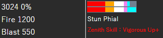
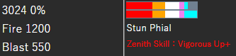
The Gravios Swaxe has really good stats all around. High raw, high element, and a decent amount of blast. It also has Vigorous Up and stun phials which are great in road.
Gasura Swaxe
 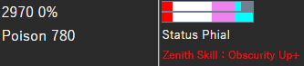
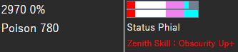
Gasura Swaxe is a bit different than the former option. It's not considered general use because there are quite a few poison resistant zeniths in this game (baru, gasura, espinas), but it's definitely still really good. It has good raw, decent poison, very good sharpness and Obscurity Up zenith skill which you usually run on Swaxe anyway. Status phials are not the best but the high raw compared to baru alleviates this a bit.
Festi Swaxes
To make these Swaxes you will need to unlock "Festi Gems" in the road shop by reaching floor 21 or higher in a single run.
Poet Swaxe
 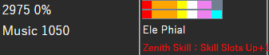
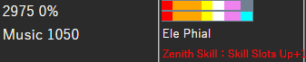
This Swaxe features a good combo element (100% Ice/100%Water) and ele phials along with SSU as the Z skill. It's good against monsters that are weak to either ice or water and excellent against monsters that are weak to both (Z Mido/Boga/Taikun etc).
Chroma Swaxe
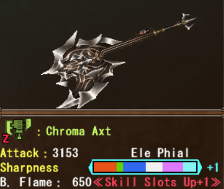 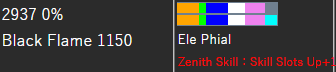This Swaxe is great against monsters that are weak to dragon damage (B.Flame is 150% Dragon/50%Fire). Dragon tends to be a less common weakness for Zeniths and damage-wise this Swaxe is outclassed by Ravi "Shine" but it's useful for breaking Z Torid wings (Which are needed for the "Flash" evo weapons).
Ruber-Tsukuri


Similar to the Chroma but with slightly worse stats and a reversed combo element (150%Fire/50%Dragon). This weapon gets outclassed by Fransisca but is much easier and cheaper to make and may even be preferred in matchups like Giaorugu where the head is not the Z part.
Mid-Late game options
These Swaxes are great but require some investment and aren't as easily obtainable as some of the earlier ones mentioned. They are still cheaper/easier to get than an EVO weapon.
Supreme Axe Francisca
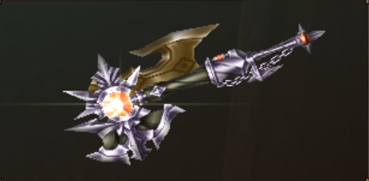
Francisca has stun phials, Skill Slots Up+1 a good amount of raw, paralysis and especially light element (70% Fire/ 70% Thunder). It works wonders for Zenith farming, especially when the weak spot of the monster is the head meaning you get a free stun in your hunt.
Happy Meowoween
 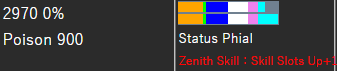
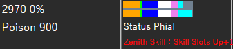
This switch axe has status phials, Skill Slots Up+1, poison and a lot of cyan sharpness. While status phials aren't that great, the other weapon stats are amazing and poison is a strong status in this game.
Tower Swaxe (Blue Blood)
 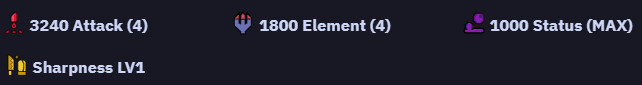
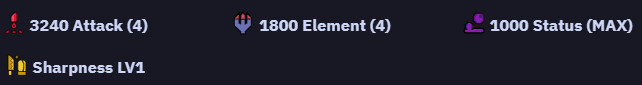
Highly customizable endgame weapon that's very cheap to make and does its job extremely well. The simulation of the stats is listed in the picture on the right. You want to pair this weapon with Abnormality. You lose Z partbreaker and normal weapon sigils but gain quite a lot of raw and element combined with poison in return.
Ravi Evolution Swaxes
These weapons require a lot of grinding to fully upgrade but are extremely powerful. Ravi weapons are obtainable without any Bounty Coins.
Ravi "Flash"
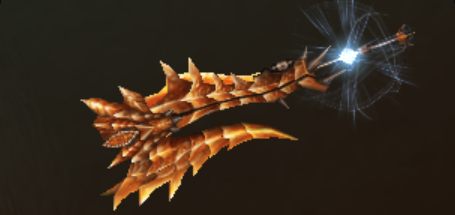
Ravi Flash is a very good evo to start off with when you don't have enough funds to be able to afford a premium evo (highly depends on the server you play on, on rain premium evos cost BC). 1000 Dragon, 30% affinity, 150 hits of cyan sharpness and SSU+1 are very solid stats and make it a really good endgame Swaxe. Very good for Zeru and Durem specifically.
Ravi "Shine"


With 2800 Dragon it has the highest element next to other "Shine" evos, and has the ele phial 1.3x ele multiplier on top of that. It is especially good against Zeru, and when paired with a perfect Z Element Sigil. Outside of Zeru it's use cases are rather niche and mostly good for very dragon weak monsters.
Ravi "Clear"
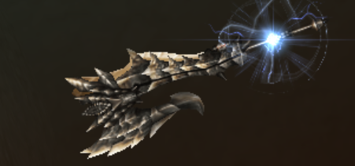 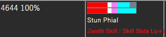This Swaxe has the highest base true raw of all the evos, 100% natural affinity and KO Phials. These traits make it an excellent choice for road.
Premium Evolution Swaxes
These weapons upgrade the same way as Ravi weapons but they also require bounty coins to purchase.
Despair Frostaxe
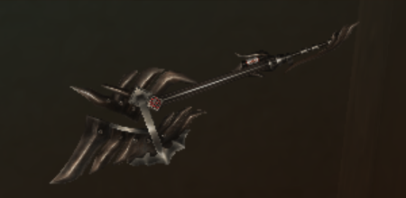 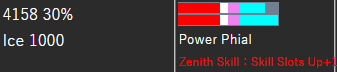
This is the best general use endgame Swaxe in the game. It can have either power phials (Flash) or ele phials (Shine), has SSU+1, quite a lot of ice and 150 hits of cyan sharpness. Since a lot of the endgame monsters are weak to ice, it's a general beast and even if not it can kill the monster with ease. Make this first if you have the funds to do so.
Despair Boltaxe
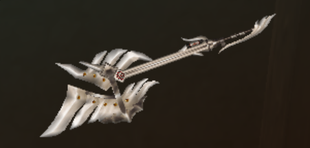 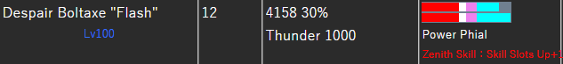
Thunder variant premium evo. Especially useful for grinding Narga or other thunder weak monsters, but not a huge priority.
Black Flowaxt
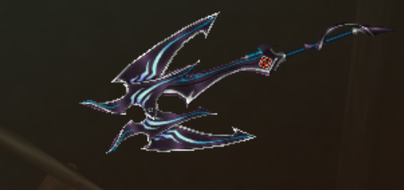 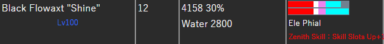
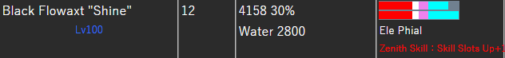
Water variant premium evo. Very niche use cases like Disu, but looks pretty cool. Make this as one of the later ones.
Black Charaxt
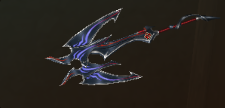 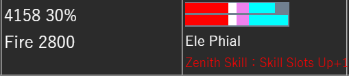
Fire variant premium evo. For endgame monsters practically never used but very awesome for zeniths since a lot of zeniths are weak to fire. If you plan to do advanced road runs with a no stunlock group this Swaxe is fantastic.
General use endgame sets
These are the general use sets to use in the endgame and can be used on everything as long as you're playing on full health (on adrenaline health you lose the benefit of vigorous). Other most specialized sets for certain matchups/purposes will be discussed in the next sections of this guide.
CS+SW General Set

Weapon: Frostaxe Despair "Flash" (or any Zenith SSU Swaxe if you need Z Partbreaker)
Sigils: SAF Up/(SAF) Guard/Atk OR SAF Up/Atk/Atk + All Atk + All Atk
Guild Food: Incitement
Poogie Skill: Taijutsu / Defence
SR Skills: All Res / Element Res
Caravan Skills: Weapon Art (lg) / Riser (lg)
Diva Skill: Lone Wolf (Solo) / Matchup Dependent (Guard+2/Status Immunity/etc)
CS+SW+Abnormality General Set
This is an alternate version of the normal general use set that trades ice age for abnormality to make better use of the tower/halloween Swaxes. Shoutout to Ningen for making this set!
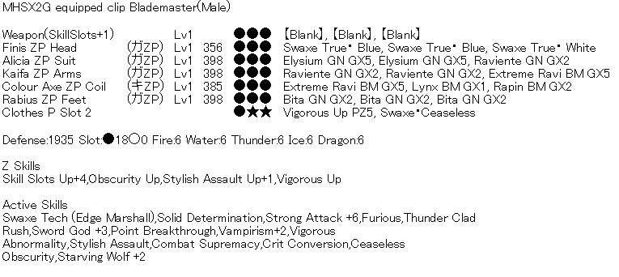Weapon: Frostaxe Despair "Flash" (or any Zenith SSU Swaxe if you need Z Partbreaker)
Sigils: SAF Up/(SAF) Guard/Atk OR SAF Up/Atk/Atk + All Atk + All Atk
Guild Food: Incitement
Poogie Skill: Taijutsu / Defence
SR Skills: All Res / Element Res
Caravan Skills: Weapon Art (lg) / Riser (lg)
Diva Skill: Lone Wolf (Solo) / Matchup Dependent (Guard+2/Status Immunity/etc)
Reflect General Set

Weapon: Frostaxe Despair "Flash" (or any Zenith SSU Swaxe if you need Z Partbreaker)
Sigils: SAF Up/(SAF) Guard/Atk OR SAF Up/Atk/Atk + All Atk + All Atk
Guild Food: Incitement
Poogie Skill: Taijutsu
SR Skills: All Res / Element Res
Caravan Skills: Weapon Art (lg) / Perfect Defense (lg)
Diva Skill: Lone Wolf (Solo) / Matchup Dependent (Guard+2/Status Immunity/etc)
Set Searcher
All sets in this guide were found using the MHFZ set searcher. You can find a guide on how to use the set searcher here and here.
Mentions
Here we want to mention other players that have contributed directly or indirectly to the creation of this guide, be it help with calculations, ideas for stuff to include or criticism for the format and suggestions for improvement. Also mentioned are players that are just very awesome speedrunners using the weapon in general. These are mentioned in no particular order, if someone feels left out don't be shy about shooting one of us a message.
- Gino for providing insight to his runs, builds and helping with Zenith matchup ranking
- Kairi_mhfz for giving lots of suggestions and helping us with calculations, and just in general being a very large reason for why the speedrunning community is this big
- MHFZ-A2 being a very good Swaxe speedrunner that has achieved alot of good pb's in the past
- MH_Blaze did lots of zeniths on Swaxe and does tons of road content and wrote an amazing website with tons of content
- Eliel helped us with a lot of calculations and generally gave his opinions on a lot of the content of the guide
- Relial gave feedback regarding calculations and proofread the guide
- Celeste helped me (mel) theorycraft sets and damage calcing certain skills (like Stylish Up)
- Doriel for creating the overlay, wycademy and other tools for us to use and always being quick on response for questions
- Leaps Guideman for creating the general progression guide for rain server as well as many other excellent guides
- Swaxe speedrunners like for example Noan and 89 and many others for contributing alot of Swaxe runs for the community
- Ningen for finding a lot of good sets and letting us use them in the guide
- And of course thank you to the player community, especially people from Frontier Fans Albania, Goocoo Fans, Sales Department, Bunnies and other guilds for being an awesome community
Additional Resources
- The Mezelounge website, specifically the Z4 Road guide for switch axe is a very good summary of every matchup and contains road specific information
- The wycademy website is a great website for damage calcs and general stuff all around the game